完整37题 · 保留原版症状示例图 · 回顾过去7天的体验
下图为黄昏时的场景，代表没有视觉症状或问题的人可能看到的景象。
后续图片展示同一场景的不同版本，用来模拟视觉问题或症状。您的实际体验可能与图片相似，也可能不同。请按真实体验回答，每题选择一项；不能理解或无法回答时可留空，请勿由他人代作判断。
本页面不自动保存填写内容。请在关闭或刷新前打印留存；公开网站请勿录入可识别患者身份的信息。
雪团样光影是出现在光源周围的明亮实心圆，例如对向车辆的前灯周围。下图为雪团样光影示例。
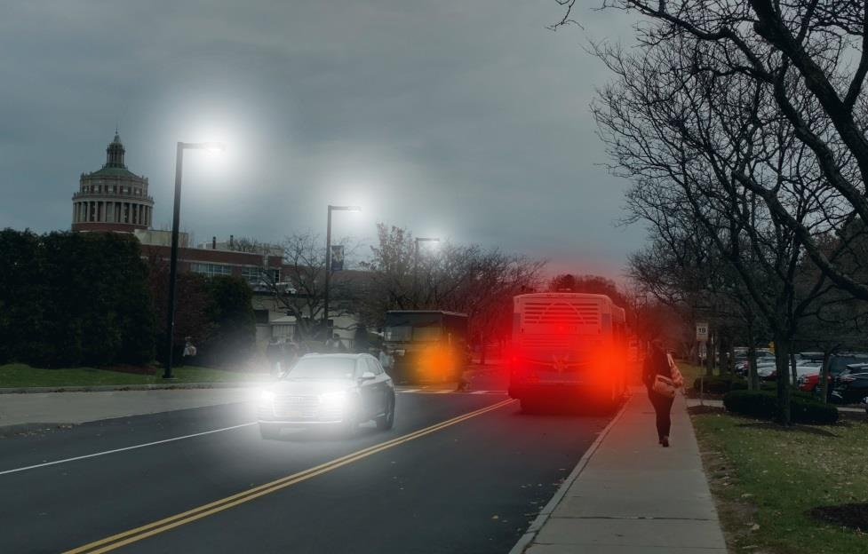
光晕是出现在光源周围的明亮圆圈或光环，例如对向车辆的前灯周围。下图为光晕示例。
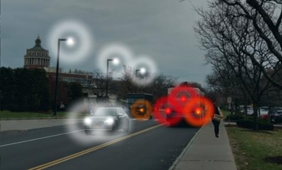
星芒或光条看起来像从光源（例如对向车辆的前灯）发出的线条或光线。一个光源可能发出一条或多条光线。本页与下一页分别展示星芒和光条。
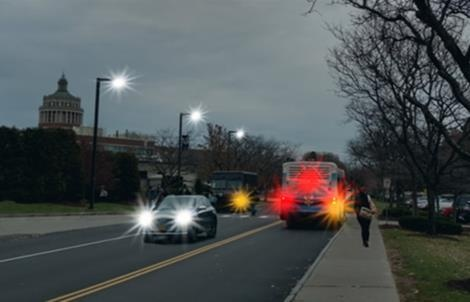
下图为光条示例。
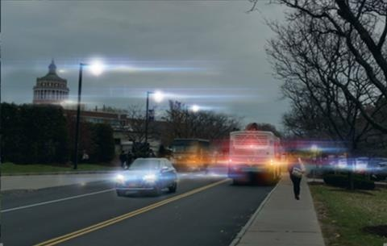
当视野中的物体被刺眼的光部分或完全遮挡时，就会出现眩光。路灯、车灯等强光都可能引起眩光。雪团样光影、光晕、星芒和光条都是眩光的例子，如下图所示。
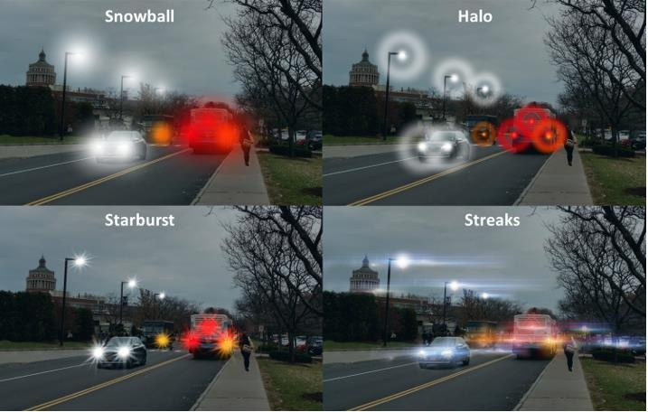
闪光或光条可能时有时无，在看向任何光源时都可能出现。睁眼时的闪光可发生在白天或夜间，呈一条或多条明亮弧形光。下图及下一页分别为日间和夜间弧形闪光示例。
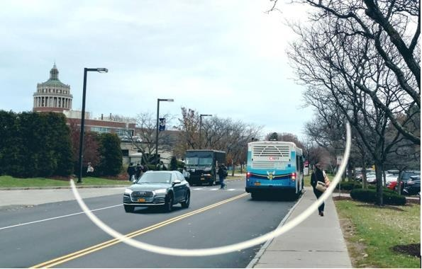
下图为夜间弧形闪光示例。
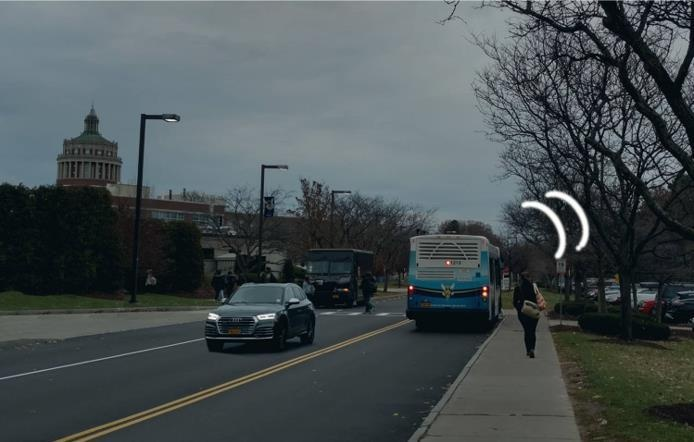
闪光是视野中针尖样的光点或光斑。它可能像锯齿状线条，也可能像热浪一样呈波浪状；还可能像流星或闪电般的光条。
在看向强光（例如下图中的车灯）时，可能看到环状影和蛛网状影。
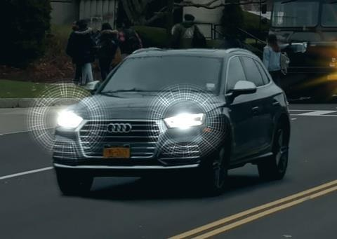
雾状视物是指所看的东西像隔着一层雾。下图为雾状视物示例。
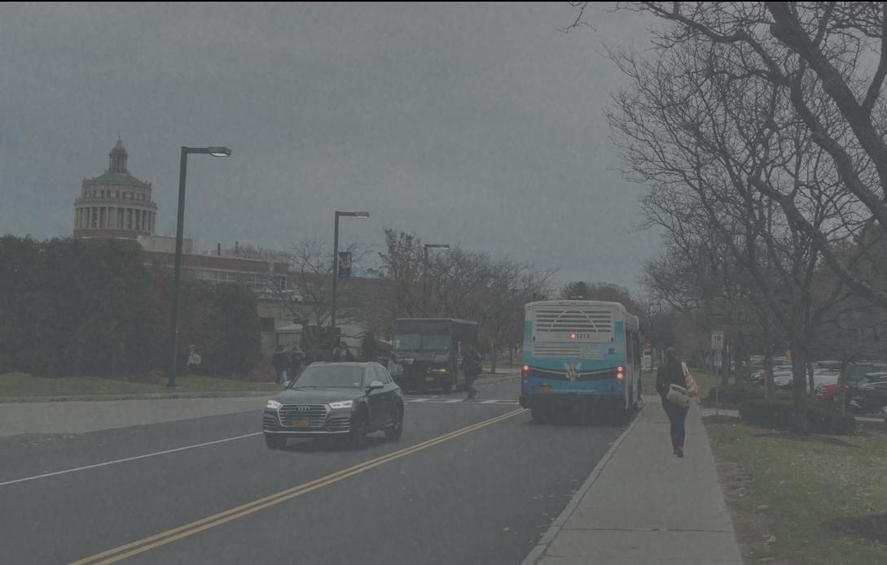
视物模糊是指看不清物体。下图为视物模糊示例。
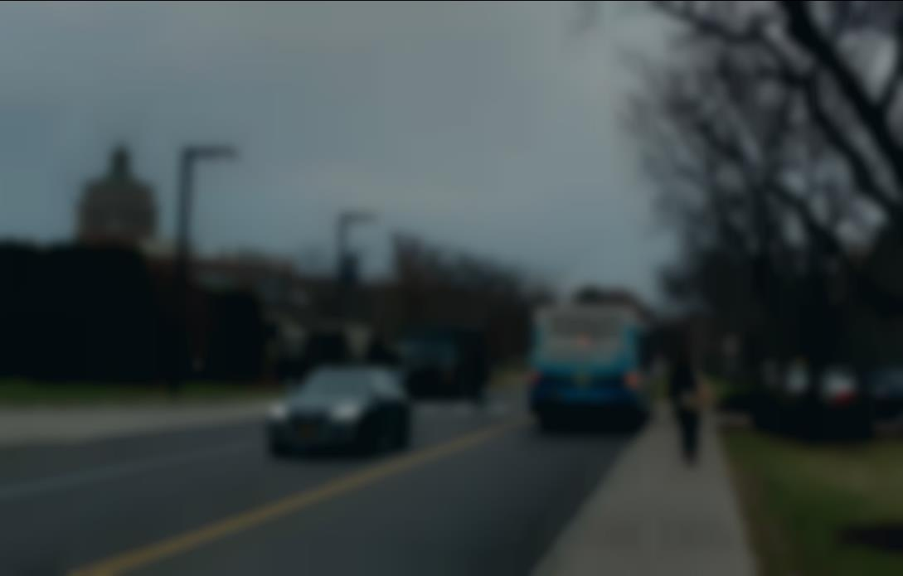
视物变形是指直线看起来倾斜、被拉长或弯曲。下图为视物变形示例。
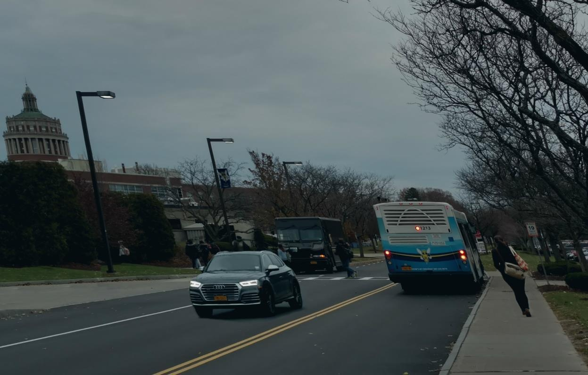
重影或多重影像是指把一个物体看成两个影像。下图为重影或多重影像示例。
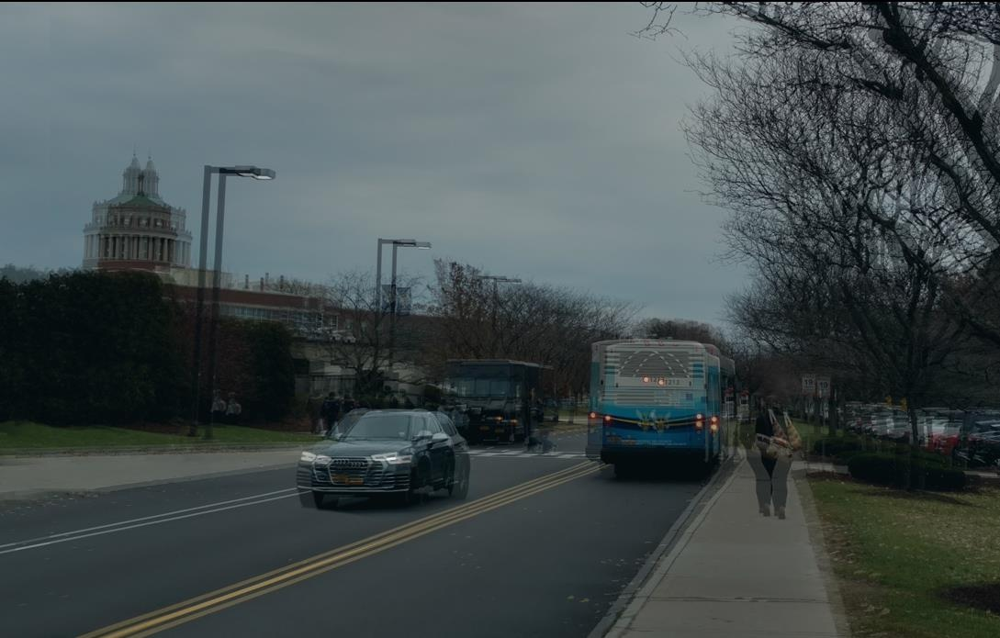
下图展示了出现在视野侧方的暗色月牙形阴影或暗线。
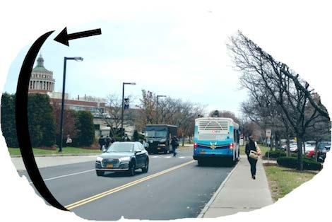
下图为飞蚊样漂浮影示例。
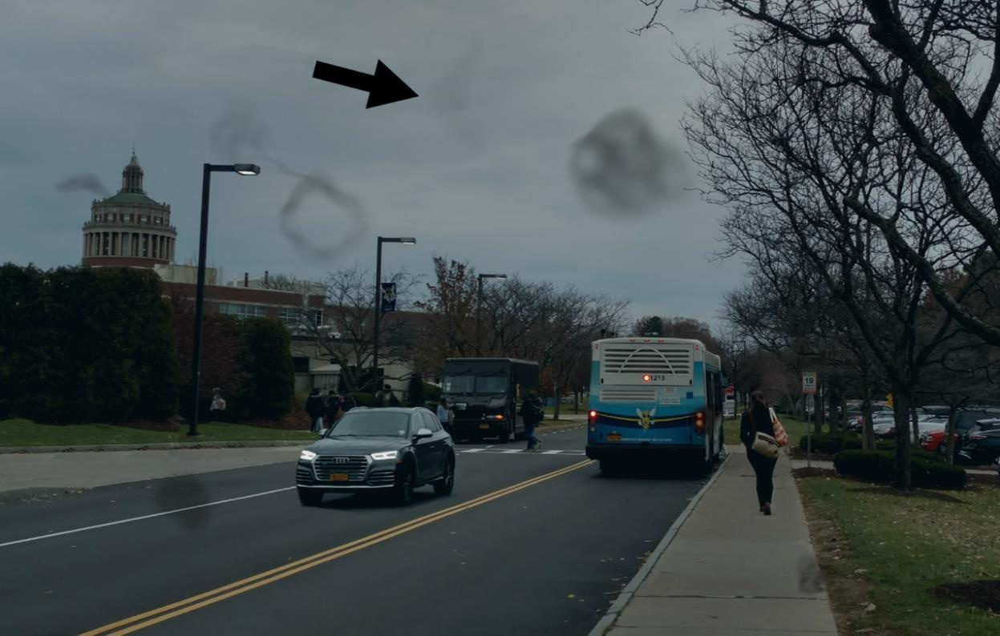
感谢您抽出时间完成本问卷。